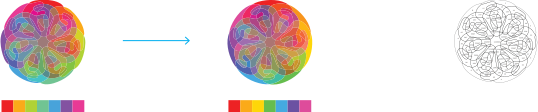
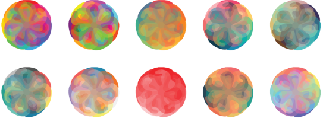
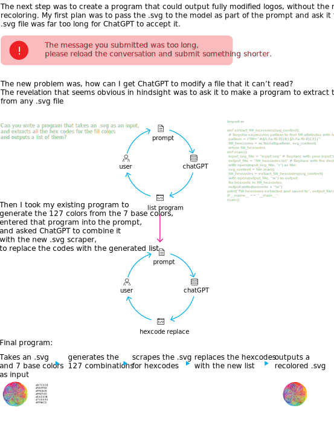

The logo is a seven set Venn diagram, where the outer sets originally were 7 colors evenly spaced around the color wheel. However, the colors were not optically balanced, there were two greens that were very close to each other. Recoloring the logo was not trivial, as the other 121 overlaps are the average color of the overlapping sets, meaning any shift in the outer colors requires all inner sections to be recolored. I created a program to replace all the colors in an svg of the logo based on any seven colors.

What appears to be a simple change is made laborious by the many inner sets that must be recolored.

After the several iterations of the program, creating new versions of the logo became trivial.
I was tasked with calculating the inner colors and making a list of their hexcodes. I was supposed to do it manually, but that would take hours, and I knew that it could be done programmatically, however I didn’t know how to code it, so I turned to ChatGPT.
The process was very iterative. I would ask GPT to write a program, run it, see if it worked, and refine my prompts. The process was like a conversation, a cycle of prompts from me and responses from the model.
